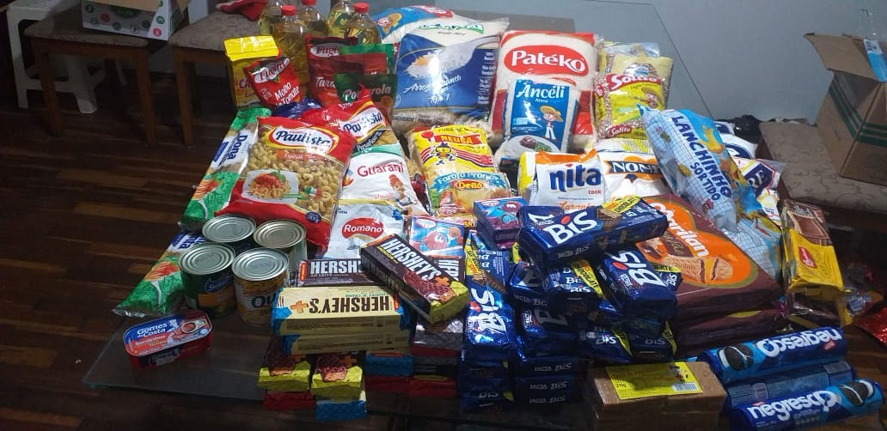
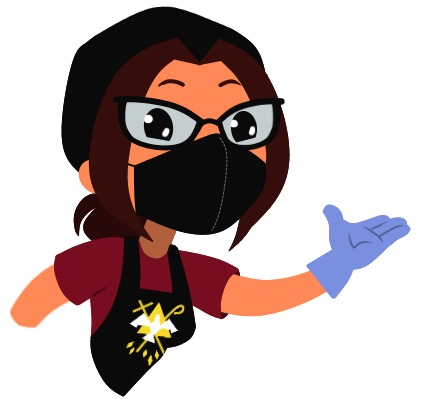
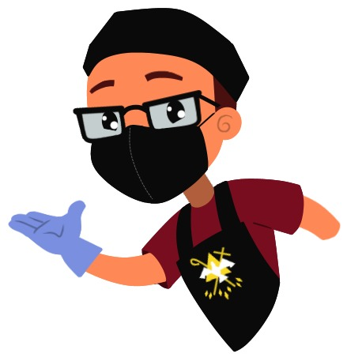

O projeto "Amor de
Maria" nasceu há 20 anos com abrigos de idosos e de crianças.
Sendo o primeiro dele o Lar
dos Desamparados (Bauru x Agudos), o qual fazemos uma visita mensal fornecendo
o lanche da tarde (1° domingo do mês, há 20 anos).
Após os abrigos para crianças
e adolescentes estarem com grandes números de voluntários, e com nossa inclusão
no Movimento "Jesus nas Ruas" oficializamos o nosso apoio ao Jesus
abandonado nas ruas da nossa cidade, pois, até então esse trabalho era esporádico,
quando sobrava alimentos de uma festa, por exemplo, e passamos a sair toda
quinzena com alimentos nas praças da cidade.
Em 2019 iniciamos
nossa parceria com o movimento 7 dores de Maria, que realiza o banho, corte de
unhas e cabelos e barbas, além do café da manhã e almoço, na praça Rui Barbosa.
Em 2020, bem no início da
pandemia, deparamos com a necessidade imediata dos nossos irmãos que dependiam,
exclusivamente, das pessoas que trabalhavam no centro da cidade e, com o
comércio fechado, se depararam com o total abandono, sem terem o que comer, por
isso, resolvemos cozinhar em casa mesmo.
O trabalho foi tomando forma
e, de abril a novembro, cozinhavamos todos os dias, de domingo a domingo,
atendendo não só pessoas em situação de rua, mas também comunidades carentes
(que vai desde o alimento à móveis e utilidades e assistência social/humana).



Hoje nossa casa é um ponto de "arrecadação e distribuição, além de manutenção, pra várias comunidades. Arrecadamos desde alimentos,
roupas, fraldas até móveis